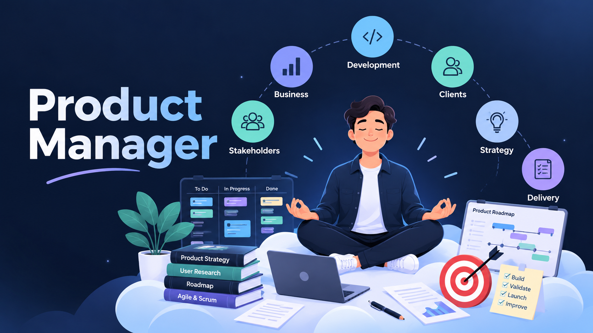
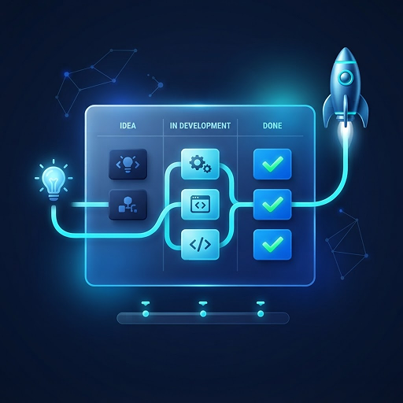
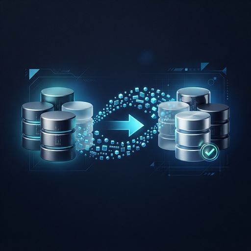

From idea to delivery
I work with stakeholders to understand business needs, define requirements, create user stories, and support development, testing, and release.
Product Delivery Manager · Business Analysis
Hi, I'm Zishan, a Product Delivery Manager with experience in business analysis and enterprise software delivery. I help translate business requirements into actionable work, coordinate across teams, and support products from planning through release.
My experience includes hospitality technology, third-party integrations, data migrations, identity management, and cloud-based systems. I focus on understanding the problem, bringing the right people together, and making sure solutions are practical for the people using them.

What this looks like in practice
A new integration isn't just a technical task. It takes clear requirements, agreement between teams, thoughtful testing, issue tracking, and preparation for go-live. I help connect those pieces.
I work with stakeholders to understand business needs, define requirements, create user stories, and support development, testing, and release.
I coordinate with clients, developers, QA, DevOps, and third-party teams to clarify priorities, resolve blockers, and keep delivery on track.
I've supported enterprise projects involving integrations, data migration, identity management, and monitoring, helping teams investigate issues and deliver practical solutions.
My work brings together business analysis, product delivery, and technical coordination. From gathering requirements and writing user stories to testing integrations and supporting releases, these are the skills I use to help teams deliver software.

Translating business requirements into user stories, coordinating with stakeholders and engineering teams, and supporting testing, validation, and release readiness.
Read about the project ↗Gathering client requirements, coordinating developers and third-party providers, testing integrations, and supporting go-live activities across hospitality technologies.
Read about the project ↗
Helping teams understand legacy data, clarify migration requirements, coordinate ETL activities, and validate migrated information for business accuracy.
Read about the project ↗Coordinating identity management integration requirements, working through migration scenarios, and supporting testing and delivery readiness across enterprise systems.
Read about the project ↗Coordinating development, database, and DevOps teams to plan migration activities, manage dependencies, support troubleshooting, and prepare for minimal downtime.
Read about the project ↗Supporting application monitoring, investigating incidents, coordinating with technical teams, and documenting issues to improve troubleshooting and operational visibility.
Read about the project ↗My career at HotelKey began in technical support, where I worked on investigating customer issues and understanding how software performs in real-world environments.
I later moved into business analysis and product delivery, working more closely with stakeholders, engineering teams, and clients to define requirements, coordinate development, and support enterprise software releases.
HotelKey · 2019–2025
HotelKey · Late 2022–2025
Bridging business requirements and technical execution by coordinating stakeholders, engineering teams, testing activities, and enterprise software delivery.
Explore the skills I use to connect business needs, technical teams, and successful product delivery.
Understanding client needs and translating them into clear, actionable requirements.
I work with clients and engineering teams to clarify requirements, identify dependencies, and support delivery.
My mechanical engineering background developed my analytical and problem-solving approach. Combined with my Certified Scrum Product Owner (CSPO) certification, it supports how I approach business analysis, Agile collaboration, and product delivery.
Mechanical Engineering
KDK College of Engineering
CSPO
Scrum Alliance
I'm exploring opportunities in Product Delivery, Product Management, Product Ownership, and Business Analysis.
If you're looking for someone who can understand business requirements, connect technical and non-technical teams, and help move projects from planning to delivery, I'd be happy to connect and discuss how I could contribute.